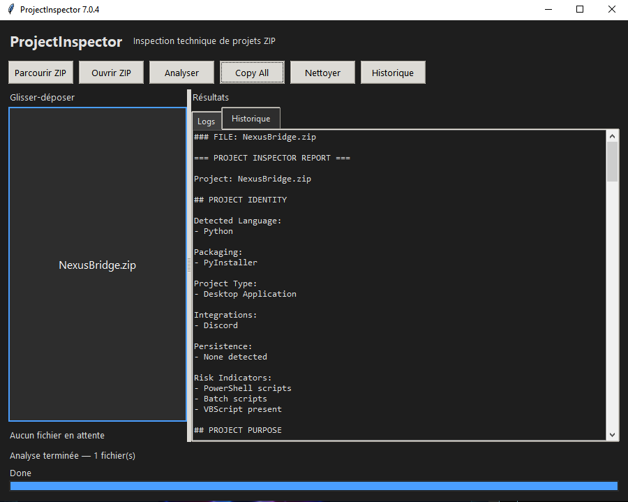

Technologies et identité du projet
Détecte le type de projet, les langages utilisés, les frameworks, le packaging et les indices permettant de comprendre rapidement à quoi sert le logiciel.
Analysez un projet logiciel en quelques secondes.
Project Inspector transforme un dossier compressé en rapport technique clair. Glissez un fichier ZIP dans l'application, laissez l'analyse se faire automatiquement, puis récupérez une vue structurée du projet : technologies détectées, architecture, fichiers importants, dépendances, intégrations réseau et indicateurs de risque.
Voir le rapport généré
Détecte le type de projet, les langages utilisés, les frameworks, le packaging et les indices permettant de comprendre rapidement à quoi sert le logiciel.
Repère les fichiers principaux, dossiers critiques, scripts, points d'entrée et éléments qui méritent l'attention lors d'une analyse.
Identifie les services, API, URLs, dépendances externes et communications possibles avec des outils comme Discord, OpenAI, Cursor ou d'autres services.
Met en évidence les éléments sensibles : persistance, autostart, scripts exécutables, intégrations réseau, comportements inhabituels ou zones à vérifier.
Project Inspector ne se contente pas d'afficher une interface. Il génère un rapport structuré, pensé pour être copié dans ChatGPT, Cursor ou tout autre outil d'analyse afin d'accélérer le diagnostic d'un projet.
Glisser un ZIP
Analyse automatique
Rapport structuré
Copier le résultat
Envoyer à ChatGPT ou Cursor
Obtenez rapidement une vue d'ensemble d'un projet inconnu, même sans ouvrir chaque fichier manuellement.
Repérez les zones importantes avant de demander de l'aide, corriger un bogue ou analyser une architecture.
Transformez un dossier complexe en résumé lisible, utile pour partager l'état d'un projet avec un client, un collègue ou une IA.
Réduisez le temps passé à explorer manuellement les fichiers et concentrez-vous sur les décisions importantes.